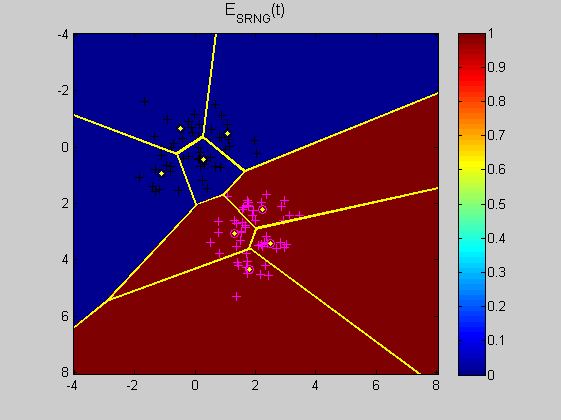
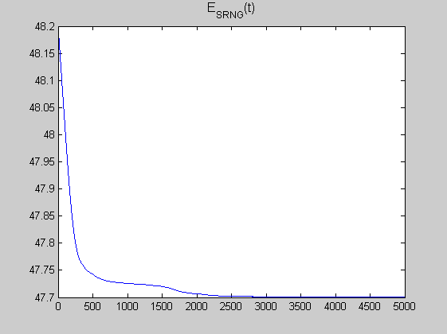
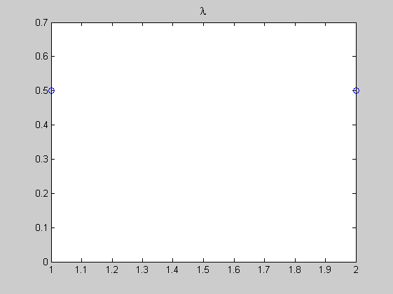
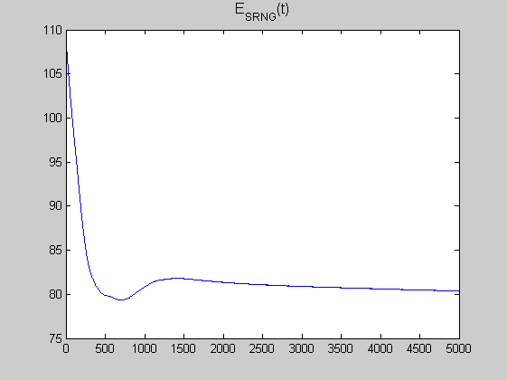
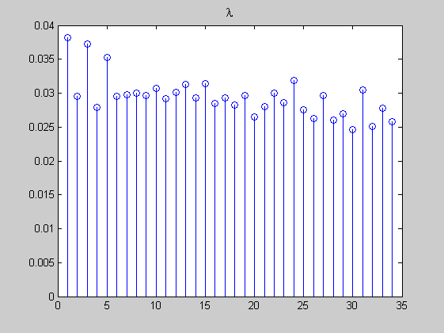
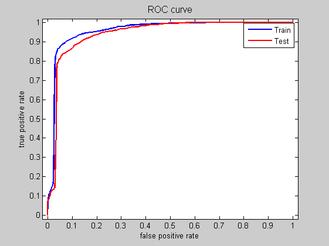

Contents
First example
clear, clc, close all hidden
disp('Running example 1 ....')
d = 2;
Ntrain = 100;
m = 2;
M0 = [0 ; 0];
R0 = [1 0 ; 0 1];
M1 = [2 ; 3];
R1 = [0.5 0.1 ; 0.2 1];
vect_test = (-4:0.1:8);
options.epsilonk = 0.005;
options.epsilonl = 0.001;
options.epsilonlambda = 10e-8;
options.sigmastart = 2;
options.sigmaend = 10e-4;
options.sigmastretch = 10e-3;
options.threshold = 10e-10;
options.xi = 0.1;
options.nb_iterations = 5000;
options.metric_method = 1;
options.shuffle = 1;
options.updatelambda = 1;
Xtrain = [M0(: , ones(1 , Ntrain/2)) + chol(R0)'*randn(d , Ntrain/2) , M1(: , ones(1 , Ntrain/2)) + chol(R1)'*randn(d , Ntrain/2)];
ytrain = [zeros(1 , Ntrain/2) , ones(1 , Ntrain/2)];
[X , Y] = meshgrid(vect_test);
Xtest = [X(:)' ; Y(:)'];
Nproto_pclass = 4*ones(1 , length(unique(ytrain)));
[Wproto , yproto , lambda] = ini_proto(Xtrain , ytrain , Nproto_pclass);
[Wproto_est , yproto_est , lambda_est, E_SRNG] = srng_model(Xtrain , ytrain , Wproto , yproto , lambda , options);
ytest_est = NN_predict(Xtest , Wproto_est , yproto_est,lambda_est,options);
indtrain0 = (ytrain == 0);
indtrain1 = (ytrain == 1);
indproto0 = (yproto_est == 0);
indproto1 = (yproto_est == 1);
figure(1)
imagesc(vect_test , vect_test , reshape(ytest_est , length(vect_test) , length(vect_test)) )
axis ij
hold on
plot(Xtrain(1 , indtrain0) , Xtrain(2 , indtrain0) , 'k+' , Xtrain(1 , indtrain1) , Xtrain(2 , indtrain1) , 'm+' , Wproto_est(1 , indproto0) , Wproto_est(2 , indproto0) , 'ko' , Wproto_est(1 , indproto1) , Wproto_est(2 , indproto1) , 'mo')
h = voronoi(Wproto_est(1 , :) , Wproto_est(2 , :));
set(h , 'color' , 'y' , 'linewidth' , 2)
hold off
title('E_{SRNG}(t)' , 'fontsize' , 12)
colorbar
figure(2)
plot(E_SRNG);
title('E_{SRNG}(t)' , 'fontsize' , 12)
figure(3)
stem(lambda_est);
title('\lambda' , 'fontsize' , 12)
pause
Running example 1 ....
  
Second example : Roc curve on ionosphere data
disp('Running example 2 ....')
clear, close all hidden
load ionosphere
Nproto_pclass = 4*ones(1 , length(unique(y)));
options.epsilonk = 0.005;
options.epsilonl = 0.001;
options.epsilonlambda = 10e-8;
options.sigmastart = 2;
options.sigmaend = 10e-4;
options.sigmastretch = 10e-3;
options.threshold = 10e-10;
options.xi = 2;
options.nb_iterations = 5000;
options.metric_method = 1;
options.shuffle = 1;
options.updatelambda = 1;
options.method = 7;
options.holding.rho = 0.7;
options.holding.K = 20;
X = normalize(X);
[Itrain , Itest] = sampling(X , y , options);
Perftrain = zeros(1 , size(Itrain , 1));
Perftest = zeros(1 , size(Itrain , 1));
tptrain = zeros(size(Itrain , 1) , 100);
fptrain = zeros(size(Itrain , 1) , 100);
tptest = zeros(size(Itrain , 1) , 100);
fptest = zeros(size(Itrain , 1) , 100);
for i = 1 : size(Itrain , 1)
[Xtrain , ytrain , Xtest , ytest] = samplingset(X , y , Itrain , Itest , i);
[Wproto , yproto , lambda] = ini_proto(Xtrain , ytrain , Nproto_pclass);
[Wproto_est , yproto_est , lambda_est, E_SRNG] = srng_model(Xtrain , ytrain , Wproto , yproto , lambda, options);
[ytest_est , disttest] = NN_predict(Xtest , Wproto_est , yproto_est , lambda_est , options);
[ytrain_est , disttrain] = NN_predict(Xtrain , Wproto_est , yproto_est , lambda_est , options);
Perftrain(i) = perf_classif(ytrain , ytrain_est);
Perftest(i) = perf_classif(ytest , ytest_est);
dktrain = min(disttrain(yproto==0 , :));
dltrain = min(disttrain(yproto~=0 , :));
nutrain = (dktrain - dltrain)./(dktrain + dltrain);
[tptrain(i , :) , fptrain(i , :)] = basicroc(ytrain , nutrain);
dktest = min(disttest(yproto==0 , :));
dltest = min(disttest(yproto~=0 , :));
nutest = (dktest - dltest)./(dktest + dltest);
[tptest(i , :) , fptest(i , :)] = basicroc(ytest , nutest);
disp(sprintf('%d/%d' , i , options.holding.K))
drawnow
end
disp('Performances Train/Test')
disp([mean(Perftrain,2) , mean(Perftest,2)])
figure(1)
plot(E_SRNG);
title('E_{SRNG}(t)' , 'fontsize' , 12)
figure(2)
stem(lambda_est);
title('\lambda' , 'fontsize' , 12)
figure(3)
plot(mean(fptrain , 1) , mean(tptrain , 1) , mean(fptest , 1) , mean(tptest , 1) , 'r' , 'linewidth' , 2)
axis([-0.02 , 1.02 , -0.02 , 1.02])
xlabel('false positive rate');
ylabel('true positive rate');
title('ROC curve','fontsize' , 12);
legend(['Train'] , ['Test'])
Running example 2 ....
1/20
2/20
3/20
4/20
5/20
6/20
7/20
8/20
9/20
10/20
11/20
12/20
13/20
14/20
15/20
16/20
17/20
18/20
19/20
20/20
Performances Train/Test
0.9140 0.8976
  